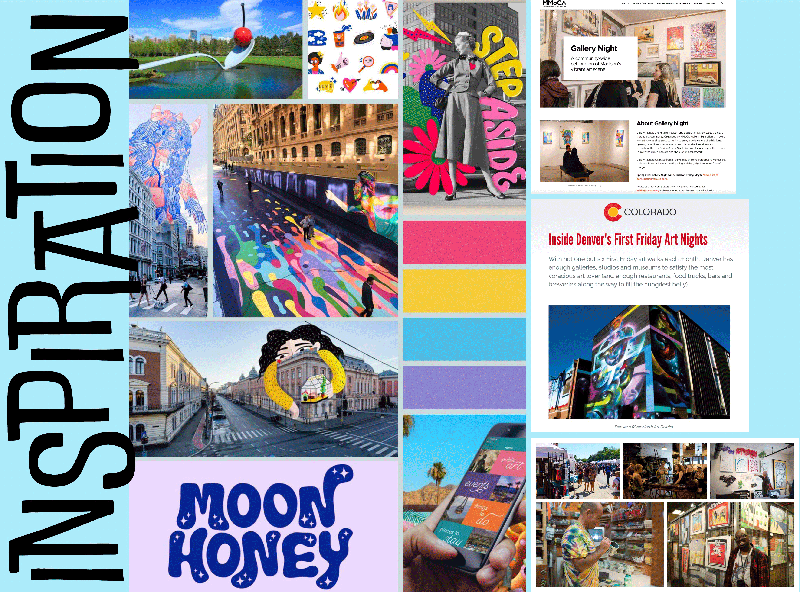
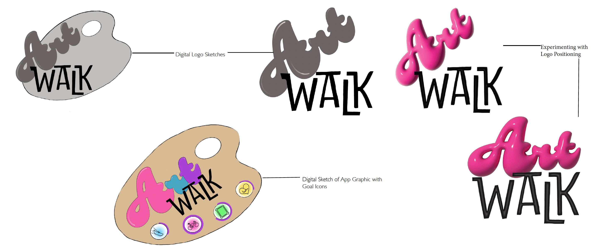
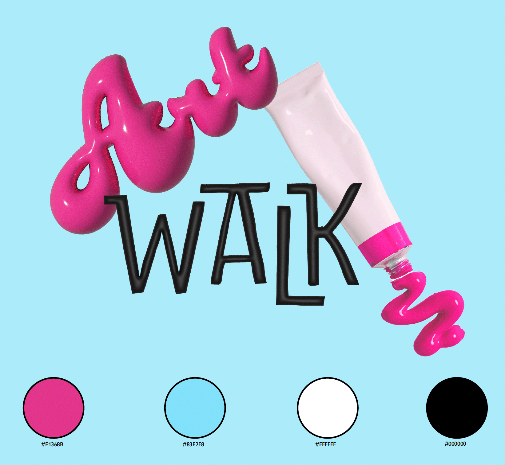

WHAT:
Branding and prototyping of an interactive arts and exercise app
WHY:
To combat loneliness and connect users with art and community
The United States is facing a loneliness epidemic which is causing serious health problems. It can be remedied with stronger community connections and rethinking the way technology is used.
Physical activity, paired with community engagement would help to improve mental health. Technology can be used to help motivate people to get moving and engaged.
Some cities host gallery nights or art walks on a yearly or monthly basis. This has inspired me to design Art Walk, an app which will use location and fitness app-inspired technology to allow users to generate personalized walk or bike routes with stops at art experiences including galleries, museums, and public art such as outdoor sculptures and murals.
No matter the location, the app encourages users to engage with their bodies, minds, and the world outside their door.
I focused a large portion of my time on researching mental health and how it corresponds with community and technology, the use of augmented reality paired with artwork, community arts events, and existing arts and augmented reality apps. From there, I continued developing the concept for my own app, making some early decisions about how the app will function. Once my ideas had begun to take shape, I worked on branding, including envisioning how large physical ads for the app could be placed around the cities it could be used in. After establishing the brand identity, I began working on the app itself. This included designing the user journey, gathering photography, designing icons, and working in Adobe Aero to create and capture 3D sculptures in augmented reality. Finally, I moved on to prototyping in Figma. Accessibility was considered throughout the design process, and as a result the app offers audio of the written information and will be made available in multiple languages.

Through market research, I was able to discover and study any similar apps that currently exist. I also researched gallery nights and art walks in various cities as well as mental health, the impacts of similar apps, the loneliness epidemic the US is experiencing, and how technology can be reframed as a connector rather than an isolator.
Of the similar apps I have been able to find, none have combined all of the elements I intend to include in Art Walk. Many focus on one specific geographic location or type of art (i.e. Greater Palm Springs and public outdoor art). They also lack the integration of fitness and art experience tracking and goal setting.
The name Art Walk connects the inspiration I have taken from art walks and gallery nights with the physical act of walking from art experience to art experience.
Above are my early logo sketches. I chose the combination of Ducky and Doublebass as the two fonts for the logo, inflating and adding shine to the Art portion of the logo. My thought behind these choices is to make the Art portion of the logo look bright, fluid, and artistic, almost reminiscent of paint being squeezed from a paint tube while the Walk portion has movement and brings up mental associations of movement on sidewalks or streets. Final logo and color palette shown below.

Location-specific landing pages were created for a variety of cities. This would continue to grow with further development of the app.
City-inspired colors are used in tandem with landmark photography behind the Art Walk logo and tagline.
Upon opening the app, the landing page would move through several different cities before eventually stopping on the user’s location city.
These images could also be used in physical ads in their respective cities, as shown in the mockups above.

Pictured above, a user following the in-app directions for their personalized Art Walk tour arrives at an art stop.
Once the user arrives, the screen shifts from showing the map or street view to showing an image of the art experience they have arrived at. An alert message also appears on the screen providing information about what they are about to experience.
For art stops containing multiple pieces, such as museums or galleries, the alert will appear as shown in the photo above.
For art stops that involve single pieces, such as public sculptures, murals, or augmented reality pieces, an option will be available to view and save separate artist bio and the artist’s website/ social media. This option may also be available for larger exhibitions or shows in museums and galleries dedicated to single artists.
Further details regarding the functionality of the app are available in the following images and Figma prototype.